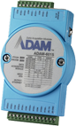
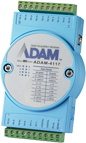
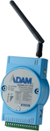
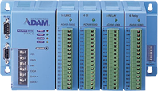
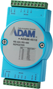

- 专业
- 专注
- 专长
7*24小时免费销售热线
800-820-5593

远程IO模块
当前位置：产品中心 > 远程IO模块
华 G495的 ADAM-6000 透过最新因特网技术轻松达成整合作业，因此能够更有弹性地从远程监控装置状态。 研华 的 ADAM-6000 模块具有点对点 (P2P) 与图形化逻辑控制 (GCL) 的支持，可以当成独立的产品，执行测量、控制与自动化。 凭借 研华 的 P2P 与 GCL 技术， 加上容易使用且直觉式的图形工具程序，可在极短时间完成系统设定。
-

研华 G495的 ADAM-6000 透过最新因特网技术轻松达成整合作业，因此能够更有弹性地从远程监控装置状态。 研华 的 ADAM-6000 模块具有点对点 (P2P) 与图形化逻辑控制 (GCL) 的支持，可以当成独立的产品，执行测量、控制与自动化。 凭借 研华 的 P2P 与 GCL 技术， 加上容易使用且直觉式的图形工具程序，可在极短时间完成系统设定。
-

ADAM-4000 模块是建置符合成本效益之远程 I/O 系统的最佳选择。 简易接线的优势，可让客户从ADAM-4000模块获益，只要两条连接线即可与所属控制器或其他 RS-485 模块装置通讯。 ADAM-4000 模块采用 EIA RS-485 通讯协议；此一业界最广泛使用的双向、平衡型传输线路，适合工业环境使用。
-

ADAM-2000 系列整合无线功能、电源管理及 I/O 技术，是数据撷取领域的革命性产品。 以 IEEE 802.15.4 无线标准为架构，让网络更容易部署与扩展。 此外，低速和低工作周期则让它们可以充当独立运作装置，提供节省成本的分布式I/O解决方案。凭借普及的工业级通讯协议Modbus RTU，ADAM-2000系列产品适合搭配任何SCADA图控软件或其它研华的工业产品。
-

ADAM-5000 模块是建置符合成本效益之远程 I/O 系统的最佳选择。 简易接线的优势，可让客户从ADAM-4000模块获益，只要两条连接线即可与所属控制器或其他 RS-485 模块装置通讯。 ADAM-5000 模块采用 EIA RS-485 通讯协议；此一业界最广泛使用的双向、平衡型传输线路，适合工业环境使用。
-

序列媒体转换器及中继器协助序列网络与其他媒体之间的转换。它们能够将 RS-232 讯号以通透方式转换为 RS-422/485 讯号，以及无线与光纤讯号。 多数工业级计算机系统皆有配备标准的 RS-232 串行端口。 虽然获得使用者广泛接受，不过 RS-232 在传输速度、范围及网络联机上却有所限制。
ADAM-2000 系列整合无线功能、电源管理及 I/O 技术，是数据撷取领域的革命性产品。 以 IEEE 802.15.4 无线标准为架构，让网络更容易部署与扩展。 此外，低速和低工作周期则让它们可以充当独立运作装置，提供节省成本的分布式 I/O 解决方案。 凭借普及的工业级通讯协议 Modbus RTU，ADAM-2000 系列产品适合搭配任何 SCADA 图控软件或其它研华的工业产品，例如 IPC、ADAM、EKI 或 WebAccess。
- 符合2.4 GHz IEEE 802.15.4 RF频段标准
- 低成本、低功耗
- 户外传输可达110米
- 支持2×AA锂电池输入
- 内置温度\湿度传感器输入